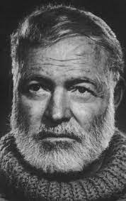
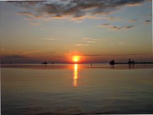
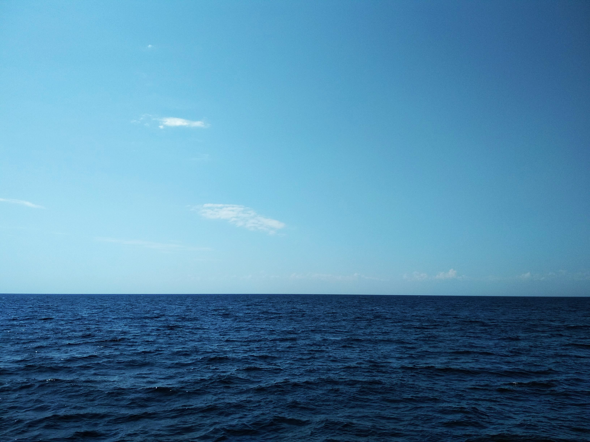

Ернест Хемінгуей «Старий і море»
Ернест Хемінгуей
Ерне́ст Мі́ллер Хемінгуе́й (21 липня 1899 — 2 липня 1961) — американський письменник і журналіст, лауреат Нобелівської премії з літератури 1954 року, лауреат Пулітцерівської премії 1953 року. Здобув широку популярність завдяки своїм романам та оповіданням, а також завдяки активному та наповненому пригодами життю. Його лаконічний і насичений стиль оповіді відіграв значну роль у літературі XX століття. У 1993 році на його честь названо малу планету 3656 Хемінгуей. За своє життя написав та опублікував 7 романів, 6 збірників оповідань та 2 документальні роботи. Додаткові роботи, до яких належать 3 романи, 4 збірки оповідань, 3 документальні праці, опубліковано посмертно. Багато з його праць вважаються класикою американської літератури.1959 року Фідель Кастро прийшов до влади на Кубі. 1960 року письменник повернувся до США, Айдахо. Останні роки життя Хемінгуей страждав на тяжку депресію і розлади психіки на тлі цирозу печінки. У 1960 році він лікувався в клініці Майо в Рочестері (штат Міннесота) з діагнозом депресії і серйозного розумового розладу. Після повернення з лікарні Хемінгуей вкоротив собі віку, вистріливши собі в лоба з мисливської рушниці, яку подарував йому його дідусь. Це відбулося 2 липня 1961 році у його власному будинку в Кетчумі, штат Айдахо, США.
Найвідоміші твори письменника

Індійський табір
«Індейське селище» спочатку представляло 29-сторінковий рукопис без назви, але Хемінгуей скоротив його до семи сторінок. У 1924 році 7-сторінкова історія була опублікована Ф.М. Фордом у Парижі

І сонце сходить
Роман вперше був надрукований у жовтні 1926 року в США, видавництвом Charles Scribner's Sons. У 1920-ті роки Хемінгуей жив у Парижі, де працював власкором газети Торонто Стар.
.jpg)
По кому подзвін
Хемінгуей написав «По кому подзвін» упродовж 1939 року, працюючи на Кубі, в Кі-Весті та Сан-Веллі, Айдахо. Працюючи над рукописом на Кубі, письменник мешкав у готелі Амбос-Мундос. Роботу над книгою було завершено в липні 1940 року

Старий і море
Історія створення повісті «Старий і море» бере свій початок 1936 року, коли Хемінгуей опублікував у часописі «Есквайр» нарис про дійсний випадок у Гольфстримі: рибалка спіймав величезну рибину, яка довго тягла за собою човника